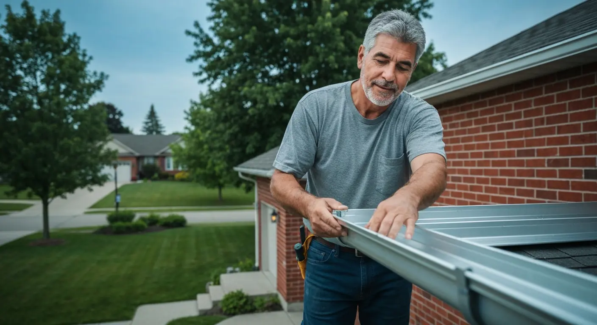
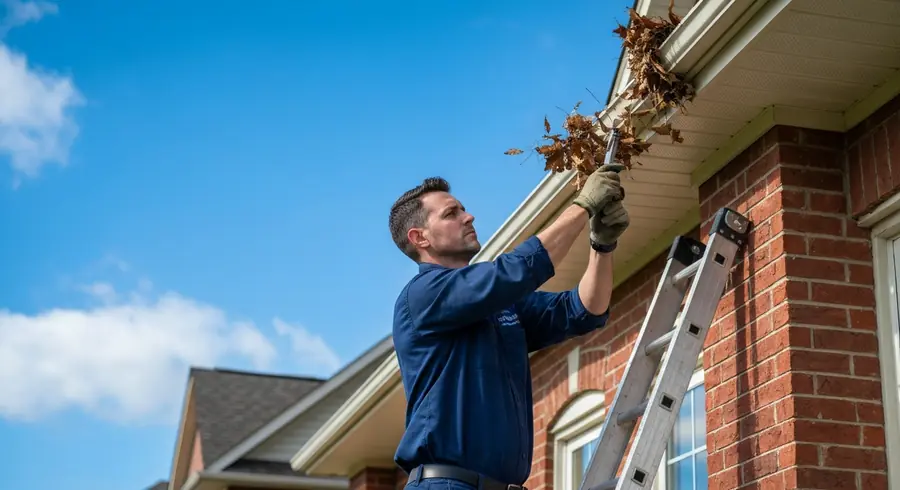
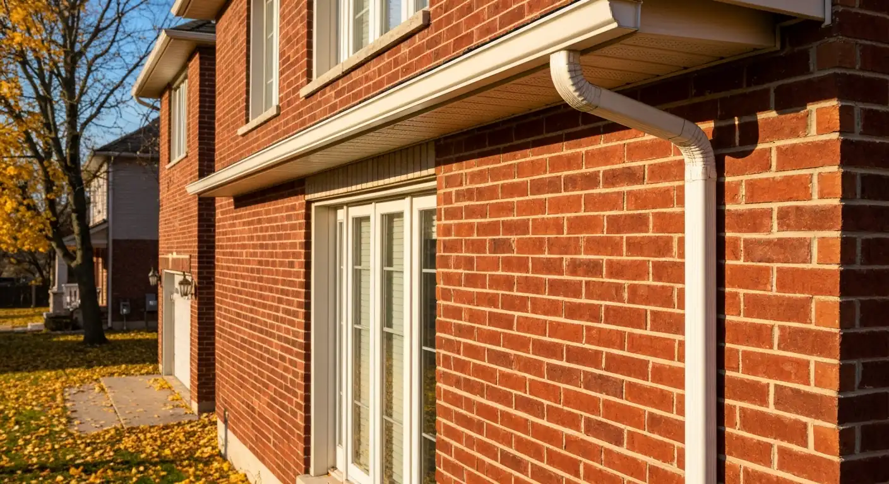
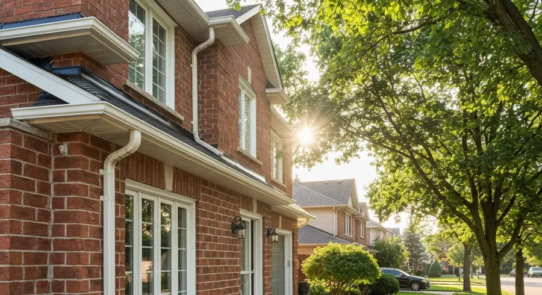
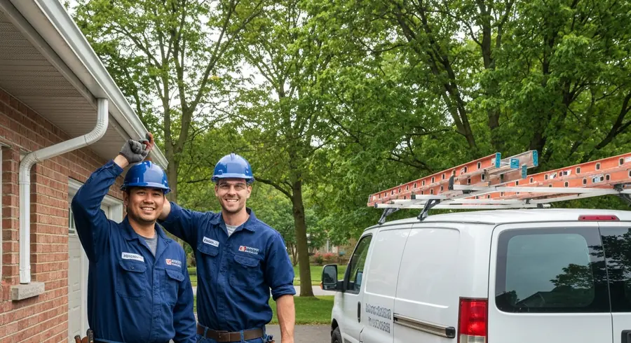

Seamless eavestrough systems protecting Guelph homes since day one. Free quotes — no obligation.
Full seamless aluminum eavestrough systems custom-fitted to your home. No leaky joints, no sagging, guaranteed.
Complete debris removal — leaves, seeds, shingle grit — with flush-test to confirm proper flow before we leave.
Leaking joints, sagging sections, cracked eavestrough — fast patch and realignment without full replacement.
MicroMesh and reverse-curve gutter guards that eliminate 95% of cleaning. Lifetime clog-free warranty available.
New downspout installation, extensions, underground drainage connections and re-routing to protect your foundation.
Pulling eavestrough off fascia in a storm? Overflowing at the foundation? We respond fast 7 days a week.





Custom-rolled aluminum on site — no joints to leak
5-year labour warranty on all new installations
Install, clean, repair, guards — one call covers it all
Serving Guelph & Wellington County homeowners
Guelph gets significant rainfall — roughly 850mm annually — and that water has to go somewhere. Without properly functioning eavestroughs, it runs down your siding, pools against your foundation, and eventually finds its way into your basement or crawlspace. It also saturates your landscaping and can undermine your driveway or walkway over time. The eavestrough system is the least glamorous part of a house, which is exactly why it gets neglected until it causes expensive damage.
Seamless aluminum is the material to choose for Guelph homes. Unlike sectional eavestroughs sold at hardware stores, seamless systems are custom-rolled to the exact length of each wall run — no joints except at corners and downspouts, which dramatically reduces leak points. Standard sectional eavestroughs have joints every 10 feet, each one a future leak waiting to happen as the caulk dries and the metal shifts through freeze-thaw cycles.
Sizing matters more than most homeowners realize. A 4-inch eavestrough was the standard for decades, but modern building practices and heavier rainfall events are pushing installations toward 5-inch and 6-inch K-style profiles. A properly sized system matched to your roof area and pitch moves water away faster, reducing overflow during heavy downpours and reducing the load on downspouts.
Downspout placement and discharge location are frequently overlooked. Downspouts that terminate too close to the foundation, discharge into clogged underground drains, or pour onto grade that slopes back toward the house defeat the entire purpose of the system. We assess the full drainage path at every quote and flag extension or humion needs when we see them.
Leaf guard and gutter cover systems range from foam inserts (don't buy these) to MicroMesh stainless steel covers that genuinely eliminate 95%+ of debris entry. Quality matters enormously — low-cost plastic guards crack, pine needles get through, and they often make cleaning harder. We install and recommend products we stand behind with a clog-free warranty.
We serve Guelph, Fergus, Elora, Rockwood, Cambridge, and all of Wellington County.
We provide eavestrough services throughout Guelph and the surrounding region:
Seamless aluminum eavestrough installation on a typical Guelph home runs $800–$1,800 depending on linear footage, number of downspouts, and any fascia board repairs needed. Larger or multi-storey homes run higher. We provide exact written quotes after measuring.
Most Guelph homes need cleaning twice a year — once in late spring after maple seeds fall, and once in late fall after leaves drop. Homes near large trees may need a third cleaning. We offer annual and bi-annual maintenance programs.
Most Guelph homes use 5-inch K-style aluminum eavestrough with 3x4-inch rectangular downspouts. Larger roof areas, steep pitches, or high-rainfall exposure may warrant 6-inch systems. We calculate the right size at the quote based on your roof geometry.
If you have mature trees near your home — especially maples, which produce both seeds in spring and leaves in fall — quality leaf guards pay for themselves within a few years in avoided cleaning costs. We recommend MicroMesh products over foam or brush-style inserts.
Quality seamless aluminum eavestroughs last 20–30 years with proper maintenance. Galvanized steel lasts a similar lifespan. Vinyl eavestroughs, common on older homes, become brittle in Ontario winters and typically need replacement after 10–15 years.
We repair wherever it makes economic sense. Isolated joint leaks, single sagging sections, and downspout issues are all repairable. If the eavestrough is over 20 years old, severely oxidized, or failing in multiple locations, full replacement is usually more cost-effective.
Contact us today for a free, no-obligation quote for eavestrough services in Guelph.